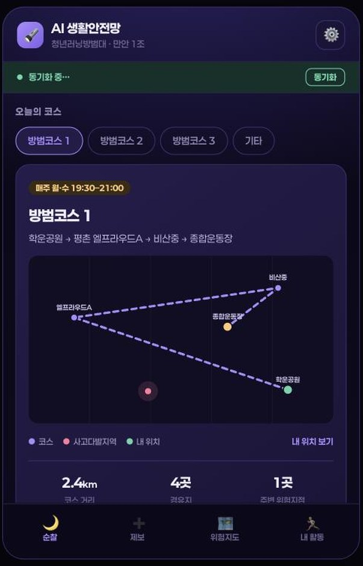
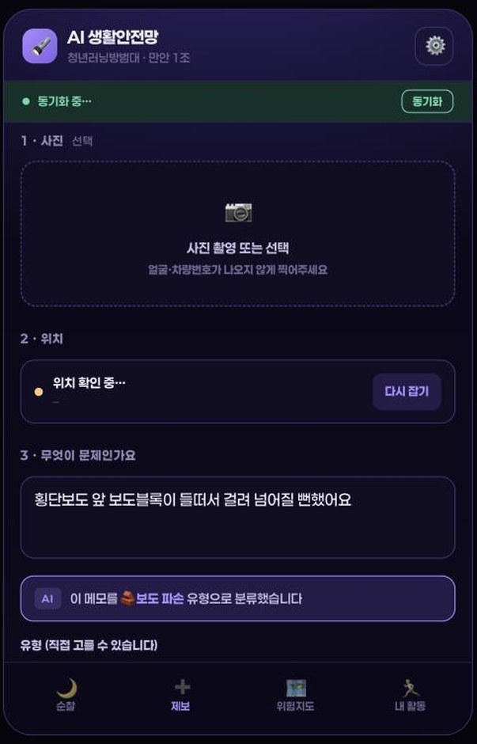
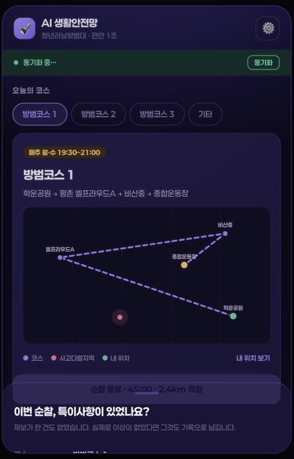
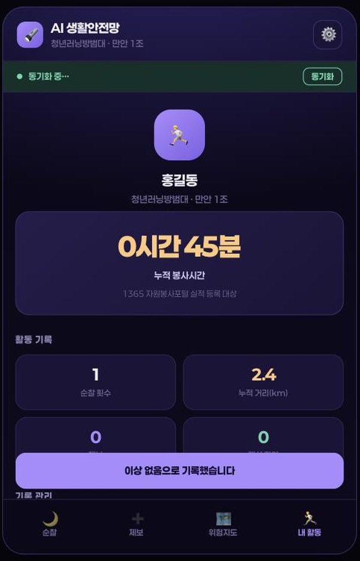

달리면서 발견한 밤길 위험을 기록하고,
민원까지 연결하는 앱입니다. 5분이면 익힙니다.
가입도, 설치도, 설정도 없습니다.

매주 월·수 저녁 7시 30분 ~ 9시
어려운 용어를 쓸 필요 없습니다. 평소 말로 적으세요.

밤에 걷는 사람이 위험할 만한 것은 모두 기록 대상입니다.
꺼진 보안등, 너무 어두운 골목, 나뭇가지에 가린 불빛
지도의 노란 점이 보안등 위치입니다
지워진 횡단보도 선, 고장 난 보행신호, 불법주차로 가려진 시야
들뜬 보도블록, 단차, 길을 막은 적치물, 물고임과 낙엽
고장 난 비상벨, CCTV 사각지대, 부서진 반사경·안전표지
제보가 한 건도 없이 순찰을 마치면 이렇게 물어봅니다.
“이번 순찰, 특이사항이 있었나요?”
이상 없음도 활동 실적입니다. 그날 코스가 안전했다는 근거가 됩니다.


순찰을 마칠 때마다 시간과 코스 거리가 더해집니다.
1365 자원봉사포털 실적 등록에 쓰입니다.
순찰 시작~종료를 한 번 할 때마다
내가 올린 제보가 실제로 고쳐진 수
대원들의 제보가 모여 지점별 위험 순위가 만들어집니다. 지점을 누르면 상세가 열립니다.
위치·유형·반복 관측·인근 사고이력·데이터 출처가 담긴 문안이 자동으로 만들어집니다. 복사해서 안전신문고에 붙여넣으세요.
발견 → 신고 → 처리 → 개선 순으로 눌러 진행 상황을 남깁니다. 모든 대원 화면에 함께 반영됩니다.
제보와 순찰 기록이 시트에 쌓입니다. 봉사시간 집계와 결과보고서에 그대로 씁니다.
문의 · cyouthlab@naver.com
앱 열기 · cyouthlab.co.kr